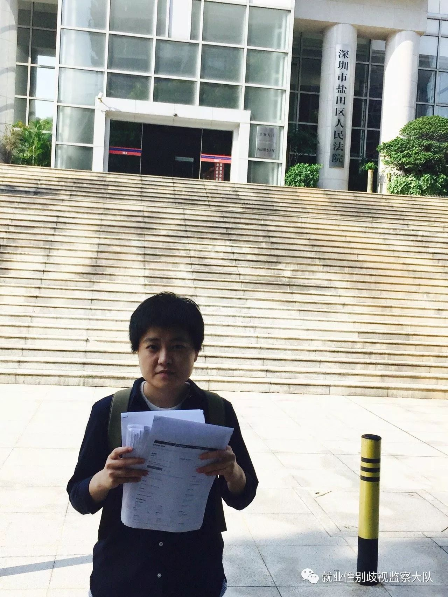

2017年10月25日上午9时30分，深圳就业性别歧视第一案于深圳市盐田区法院第六审判庭一审开庭，诉讼原因为人社局失职。
案 情 简 介
2017年2月11日，女大学生周月在中华英才网上浏览招聘信息时，发现兴百业公司发布的一条招聘“物管”的信息中明晃晃地写着“限男”涉嫌了性别歧视，于是不满于就业性别不平等的她随即向光明区劳动监察部门寄了举报信。
数日后，周月收到人社局的回复称该单位已改正，因此依法可以不予处罚并撤销立案，于是周月相信了人社局撤销了立案。然而之后在其他网站上浏览招聘信息时，周月却发现在赶集网、深圳ek人才网等网站上，这家公司发布的其他岗位招聘信息里（如保安、物管和污水处理等）性别歧视仍在继续并没有进行改正。感受到了来自于深圳市人社局的欺骗和失职的周月将深圳市人力资源和社会保障局告上法庭。
2017年7月13日，深圳市盐田区人民法院正式立案，受理周月的诉讼申请并定于今天进行一审开庭。

（仅仅深圳一个市，在58同城一个网站里竟然就可以找到这么厚的性别歧视广告！）
然而，直至一审开庭的今天，却依然可以在网站上随随便便轻轻松松地搜出深圳市40多条的招聘性别歧视广告！于是在今天开庭前，国企就业性别歧视案的当事人马户委托本案代理律师黄沙将这些广告带给了法官，希望法官看到就业性别歧视的严重性和人社局的失职。马户自己则进行庭外声援，把这些广告贴在了一个横幅上，在法院的门口展示给路人看，展幅上贴满了在各大招聘网站上搜集到的深圳市涉嫌性别歧视的这40多个招聘广告。
（国企就业性别歧视案的当事人马户和本案代理律师黄沙）
庭 审 中 的 争 议
深圳市人社局称说，他们在收到周月的举报信后便立即进行了立案调查，调查中确认兴百业公司在中华英才网上的招聘信息中确实存在性别歧视，于是责令其改正，而兴百业公司也随即就将招聘信息中的性别要求进行了撤销，因此撤案是在正常的工作流程下作出的合法处理。但至于该企业在其他网站上歧视性广告的继续，是因为周月并没有在举报信中一一指出，所以人社局不存在任何监管不力的行为，他们的工作失职并不存在。
而在今日的庭审中，代理律师问到监察性别歧视是否属于监察大队的日常工作时，他们却并没有正面回复，只是“解释”说他们1年有三四千个案子。周月的代理律师黄沙认为，《深圳市劳动保障监察办案规则》第十一条以及《广东省劳动保障监察条例》第三条这两条规定都明确劳动监察部门有主动巡视检查的责任，显然深圳市人社局并没有做到，也没有在向该违法企业询问的笔录中询问在其他网站是否有存在设置性别要求情形。而在发现该企业在招录中有再一次的违法行为后，仍然没有主动去核查，进行处理，实属失职行为。同时，中国是《消除对妇女一切形式歧视公约》的缔约国之一，《公约》规定，缔约国应采取一切适当措施，消除在就业方面对妇女的歧视，以保证她们在男女平等的基础上享有相同的权利。
作为今天开庭出席人的百业公司，则在今日开庭中解释说一些网站上的招聘广告里之所以写着“限男性”是由于一些招聘网站的要求。但他们并没有说明都是哪些招聘网站竟依然存在着如此落伍的要求，所以这让人听起来难免有一点借口的意味啊。
律 师 说
不管是在国家立法还是地区性条款中，保护妇女平等就业权的文字都有被强调，但很多监管部门仍然不以为然，很少会主动定期审查网络招聘信息中是否存在性别歧视要求，这已是工作失职。而更失职的是，诸如此案被告深圳市人社局，即便在接到举报后也没有做到彻底调查，对于违法行为得过且过，并不会进行严厉的批评教育和相应的处罚，这就使得国家的相关法律得不到有效利用，招聘性别歧视的现象也正是因此才一直存在。作为国内在性别平等推进工作上的先驱城市，深圳在2013年率先实施了《深圳经济特区性别平等条例》，却在4年后的今天仍然存在监管部门不履行性别平等监管职责的现象，这说明条例的颁布并没使性别平等的政策得以落实，就意味着条例被变成了一纸空文。
其实，除了深圳市人社局，如此不主动监察、得过且过的人社局几乎到处都是，因此此案的意义和价值在于激活这个性别平等条例，让当地相关部门在实践中应用它，这样也会慢慢提升人社局等相关部门的性别意识，对招聘中的性别歧视问题重视起来。